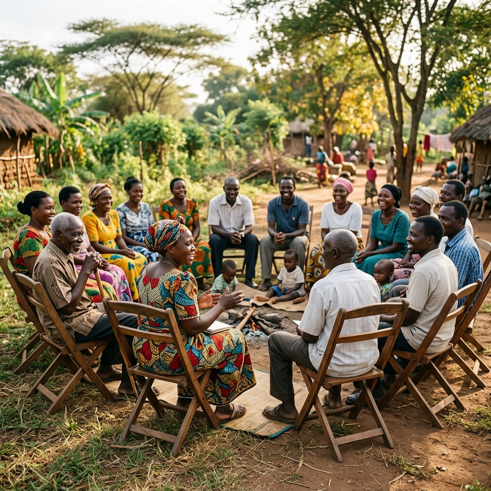
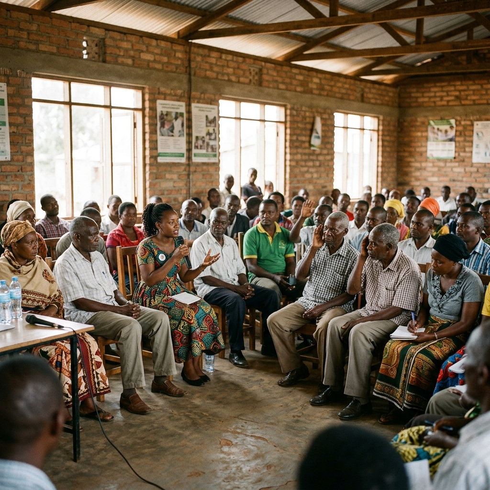
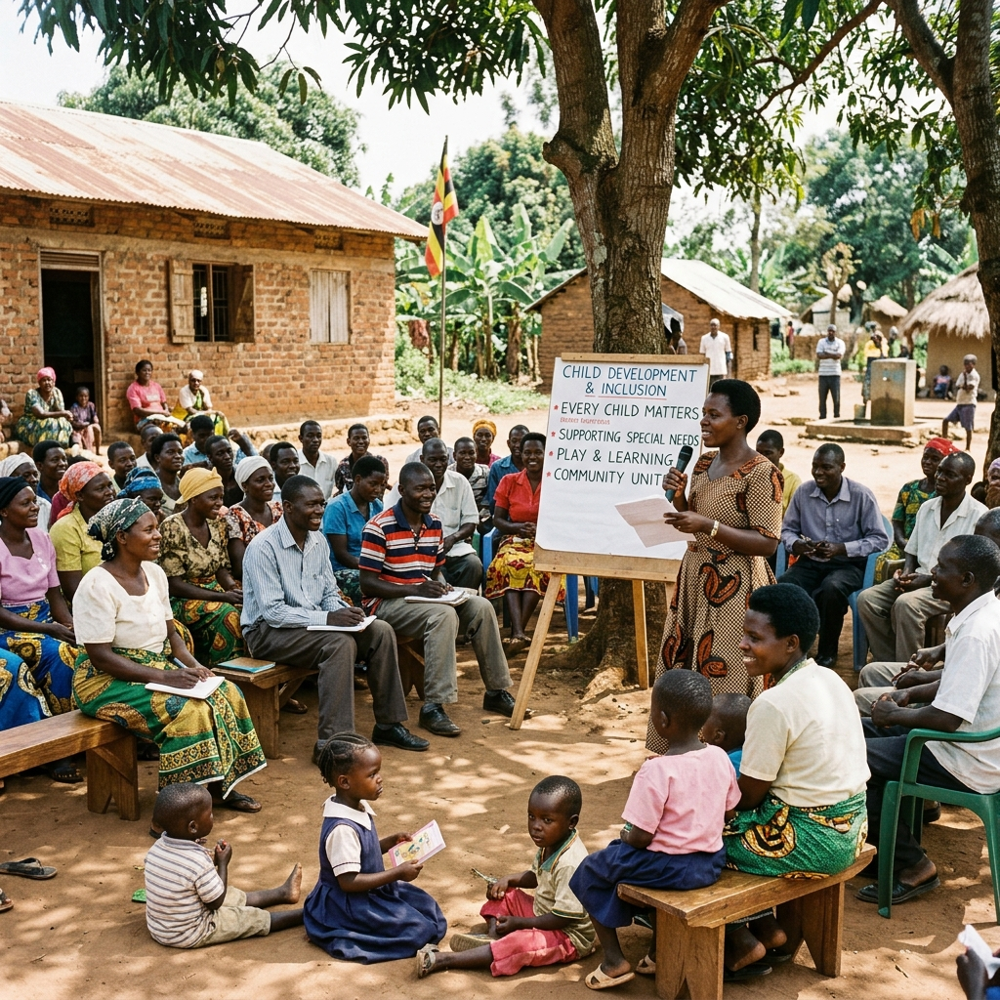
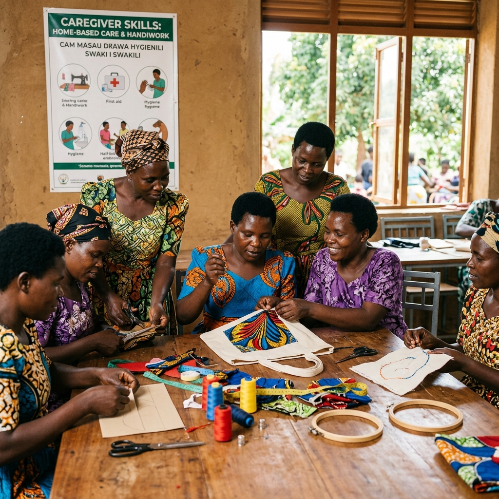

Discipleship
The Discipleship Program exists to encourage spiritual growth and provide holistic support to children with disabilities, caregivers, and families. The program is grounded in recognizing that families caring for children with disabilities often face emotional, spiritual, and social challenges that require intentional encouragement and reminder with the Gospel.
The Need
- Social isolation and rejection.
- Feelings of hopelessness and discouragement.
- Exclusion from faith and community spaces.
- Caregivers frequently carry overwhelming responsibilities while lacking support systems that nurture both their spiritual and emotional well-being.
Our Approach
- Caregiver fellowship, Bible Study and support groups.
- Prayer, encouragement, and holistic family support.
- Community-based spiritual formation programs.


Advocacy
Through Advocacy we seek to influence policies, systems, institutions, and societal attitudes to ensure children with disabilities and their caregivers are protected, respected, included, and prioritized. HBD works toward building an inclusive society where the rights and dignity of every child are upheld.
The Need
- Discrimination and exclusion.
- Inadequate implementation of disability-inclusive policies.
- Limited access to essential services and opportunities.
- Social and institutional barriers.
- Weak protection and safeguarding mechanisms.
- Many caregivers also lack awareness of their rights and available support systems.
Our Approach
- Policy engagement and stakeholder collaboration.
- Disability rights awareness initiatives.
- Community sensitization and civic education.
- Partnerships with schools, churches, and local institutions.
- Safeguarding and protection training.
- Campaigns promoting inclusion, accessibility, and equal opportunity.
Awareness
Our Awareness Program focuses on educating communities to eliminate stigma, foster understanding, and promote informed engagement with disability issues. The program seeks to transform negative perceptions and build inclusive communities that value and embrace children with disabilities and their families.
The Need
- Stigma and discrimination.
- Harmful stereotypes and misconceptions.
- Exclusion from social and community life.
- Lack of disability awareness and understanding.
- Marginalization of caregivers and families.
- This lack of awareness creates barriers to inclusion, belonging, and participation.
Our Approach
- Community education and sensitization forums.
- Disability inclusion campaigns and events.
- School and church awareness programs.
- Storytelling and positive representation initiatives.
- Engagement with community leaders and stakeholders.
- Training sessions on disability inclusion and acceptance.


Empowerment
Our Empowerment Program strengthens caregivers and families through skills development, training, and access to resources that improve caregiving capacity, family resilience, and quality of life. The program recognizes caregivers as central to the well-being and development of children with disabilities.
The Need
- Financial strain and economic instability.
- Limited access to caregiving knowledge and training.
- Emotional stress and fatigue.
- Lack of support networks and practical resources.
- Reduced opportunities for economic participation.
- Without empowerment and support, caregivers remain vulnerable and overstretched.
Our Approach
- Caregiving skills and capacity-building training.
- Economic empowerment and livelihood initiatives.
- Parenting and resilience workshops.
- Peer mentorship and caregiver support networks.
- Resource linkage and referral support.
- Training on disability care and family well-being.